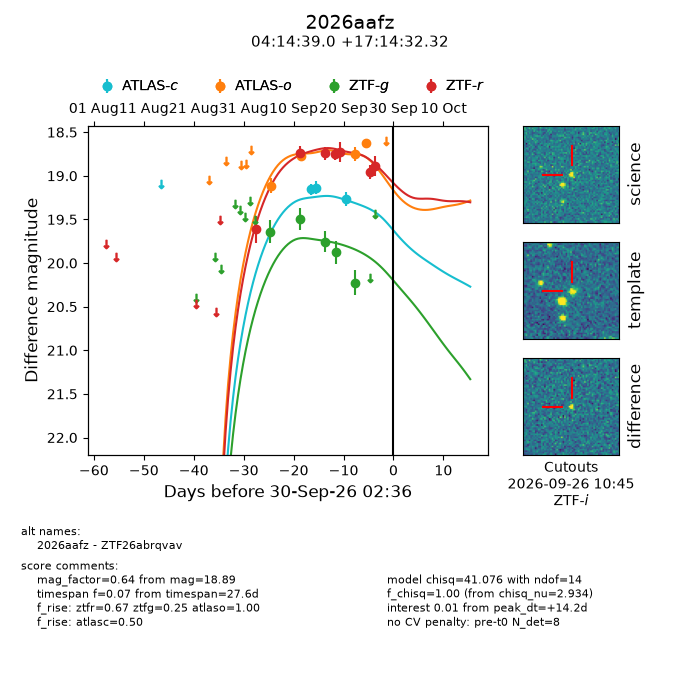
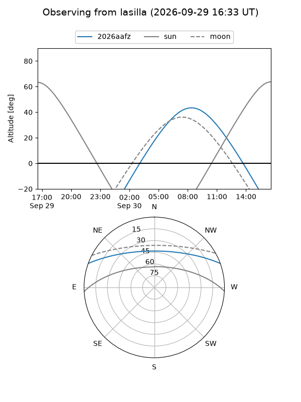
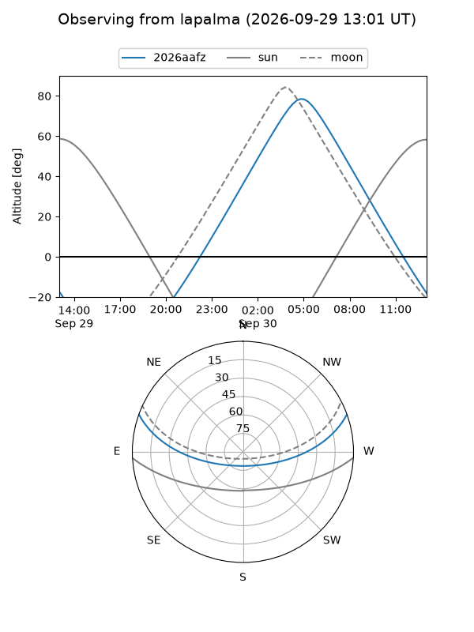
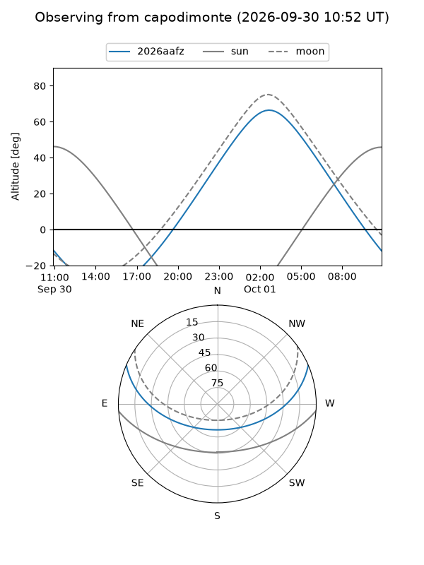
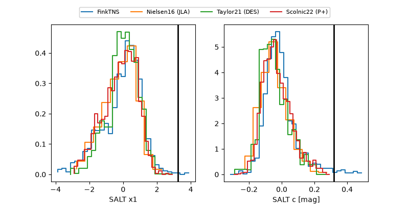

2026aafz
Target 2026aafz at 2026-09-30 14:38
Aliases and brokers:
FINK-ZTF: ztf.fink-portal.org/ZTF26abrqvav
Lasair-ZTF: lasair-ztf.lsst.ac.uk/objects/ZTF26abrqvav
ALeRCE-ZTF: alerce.online/object/ZTF26abrqvav
YSE-PZ: ziggy.ucolick.org/yse/transient_detail/2026aafz
TNS name: wis-tns.org/object/2026aafz
Direct TNS query: direct search
alt names
ZTF26abrqvav (ztf,fink_ztf)
2026aafz (tns,yse)
Coordinates:
equatorial (ra, dec) = 63.6624,+17.24231
equatorial (HMS+DMS) = 04:14:38.98,+17:14:32.32
galactic (l, b) = (176.8671,-23.70491)
Flags:
TNS type: nan
peak dt: +14.7
Photometry:
last atlasc=19.27, atlaso=18.63, ztfg=20.23, ztfr=18.89
3 atlasc, 4 atlaso, 5 ztfg, 7 ztfr detections
Lightcurve

Visibility



Additional plots
